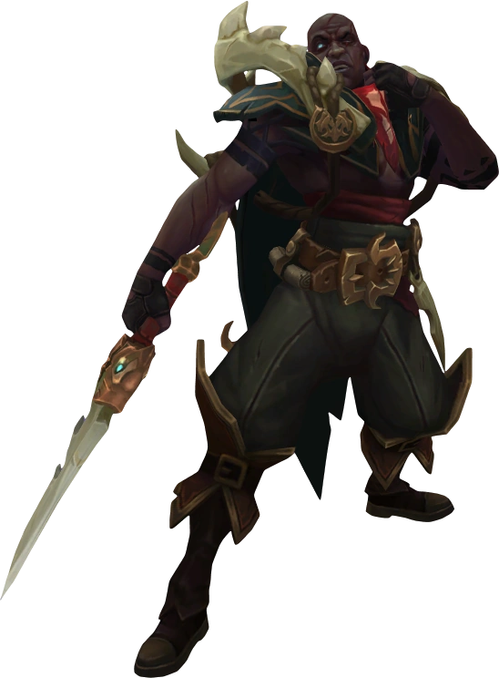

Pyke

;
"Fala afogados "
Pyke é um campeão jogável do jogo eletrônico League of Legends. Conhecido como o Estripador das Águas
Sangrentas, ele atua de forma única na função de Suporte, mas com o estilo de jogo focado em ser um
Assassino.
Habilidades